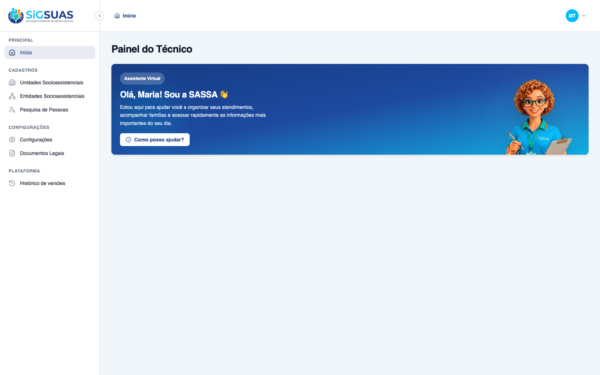
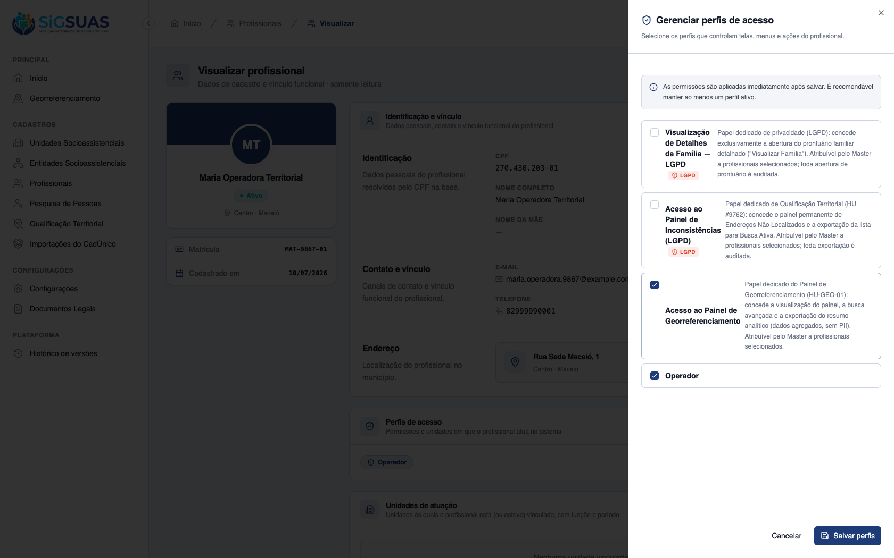
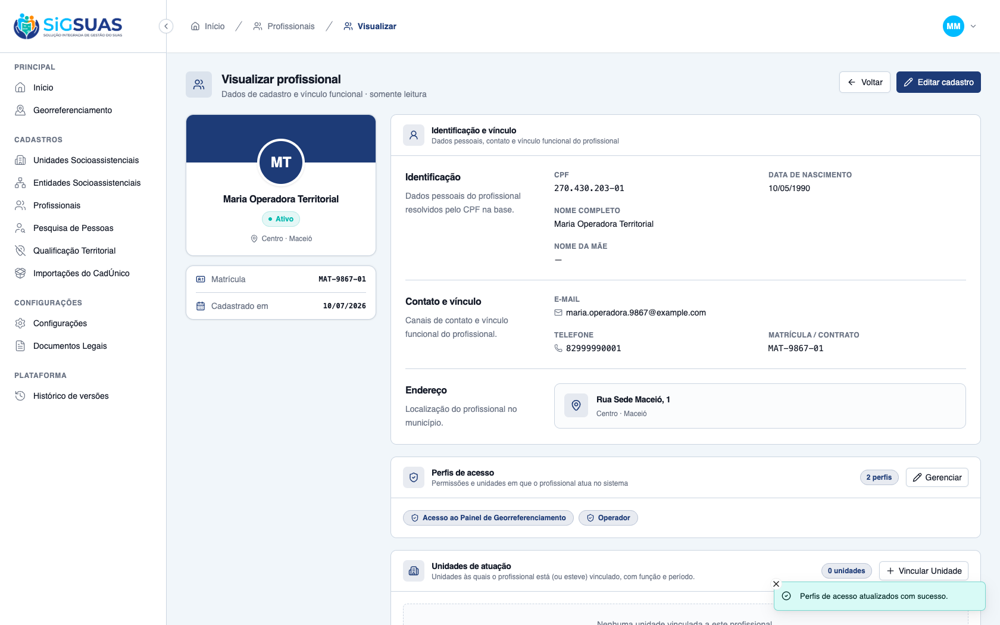

O critério de aceite da HU #9867 sobre a gestão de perfil de acesso ao Georreferenciamento pelo Master foi verificado dirigindo o app real no navegador e reforçado pela suíte automatizada — ATENDIDO. Cenário: um profissional operador (Maria Operadora Territorial, tenant Maceió Geo) inicialmente SEM o perfil de inteligência territorial. CA10: (1) Antes — logado como o operador, a barra lateral NÃO exibe o menu Georreferenciamento e a navegação direta para /app/georreferenciamento é bloqueada (redireciona para /403). (2) Concessão — logado como Master, na tela de detalhes do profissional (Profissionais Municipais), abre-se "Gerenciar perfis de acesso" e marca-se o perfil "Acesso ao Painel de Georreferenciamento" (geo_panel_viewer) — o drawer informa que "as permissões são aplicadas imediatamente após salvar"; ao salvar, o PUT professionals/{uuid}/roles responde 200 e o chip do perfil passa a constar na seção Perfis de acesso. (3) Depois — reautenticado como o operador, a barra lateral passa a exibir o menu Georreferenciamento e o painel abre normalmente. Cobertura automatizada: Pest ProfessionalRoleController (grant/revoke, MASTER-only) + GeoPanel (nega o operador base sem geo_panel_viewer; concede o painel completo ao operador assim que o geo_panel_viewer é atribuído — RN10/RN21).
| CA | Critério | Status |
|---|---|---|
| CA10 | Atribuição de perfil pelo Master (acesso imediato ao Georreferenciamento) | ATENDIDO · navegador |
Critério (Gherkin): Dado que sou Master e acesso a área de detalhes de um profissional do município, Quando vinculo o perfil de inteligência territorial ao seu cadastro e salvo, Então o Usuário atrelado a ele passa a visualizar o menu de Georreferenciamento de forma imediata.
Como foi testado: Preparação: criado um profissional operador (Maria Operadora Territorial) no tenant Maceió Geo, sem o perfil geo. Passos: (1) login como o operador e observação da barra lateral; (2) login como Master → detalhe do profissional (Profissionais Municipais) → Gerenciar perfis → marcar Acesso ao Painel de Georreferenciamento → Salvar perfis; (3) reautenticação como o operador.



=== Cobertura automatizada — atribuição de perfil (professionals.roles.sync) + gate geo (RN10/RN21) === PASS Tests\Feature\Api\Client\ProfessionalRoleControllerTest ✓ it lists current and assignable roles (CA01) 0.37s ✓ it syncs roles granting and revoking in diff (CA02/CA03) 0.02s ✓ it is idempotent when the same set is resent (RN04) 0.02s ✓ it revokes all roles when role_ids is empty (RN11) 0.02s ✓ it rejects assigning a role equal to or above the master hierarchy… 0.02s ✓ it rejects assigning an inactive role (RN02) 0.02s ✓ it returns 404 for a professional from another tenant 0.02s ✓ it forbids an operador from managing professional roles (MASTER-onl… 0.02s Tests: 8 passed (35 assertions) --- GeoPanel: gate por papel (geo_panel_viewer add-on) --- ✓ it denies every geo-panel endpoint to the base operator without the… 0.02s ✓ it grants the full panel to the operator once the geo_panel_viewer… 0.03s ✓ it grants the full panel to the Master without any add-on role (RN2… 0.03s ✓ it does not let the geo_panel_viewer role in Tenant A open the pane… 0.03s ✓ it exposes geo_panel_viewer as an add-on role, never a hierarchy po… 0.02s Tests: 53 passed (190 assertions)